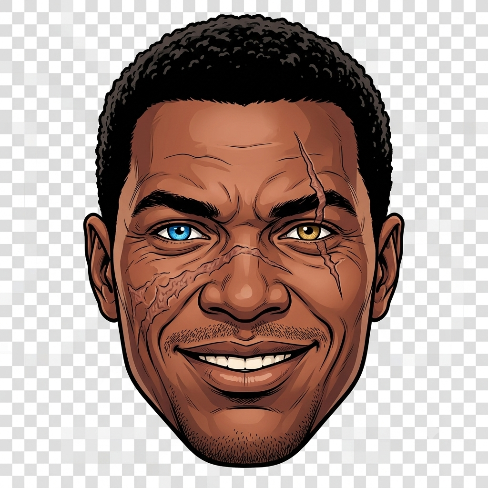

Sua jornada
Hábitos, XP, streak, check-ins e clima viram sinais do dia a dia.

O app lê o progresso do herói, o ML resume o risco e o ritmo, e a IA generativa (Charlie) usa isso para falar e guiar — com regras de segurança.
Hábitos, XP, streak, check-ins e clima viram sinais do dia a dia.
O algoritmo resume risco e padrões — sem escrever a mensagem.
A IA generativa conversa e sugere desafios com base nesse contexto.
Chat, lembretes e desafios — sempre com limites e guardrails.